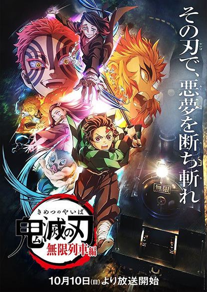
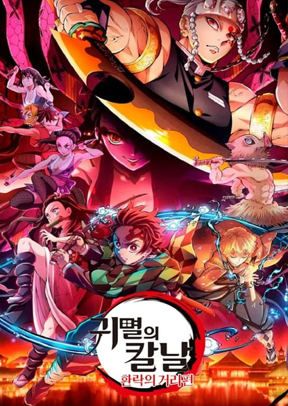
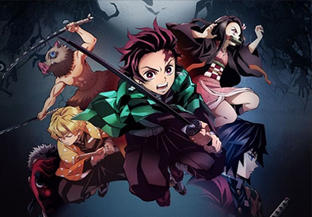
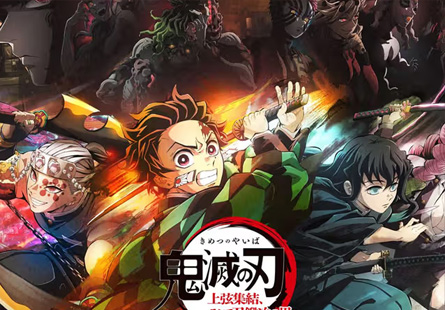
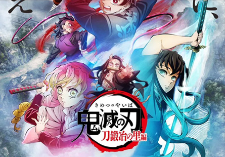

본문콘텐츠영역
鬼滅の刃
about us
- 
-
Into the endlessdream of infinity...
After treatment at the Butterfly Mansion, Tanjiro and his party arrive at their next mission. It is said that more than 40 people went missing in a short period of time there. Tanjiro, Zenitsu, and Inosuke, accompanied by Nezuko, join forces with the demon slayer's strongest swordsman, one of the Lords, Rengoku Kyojuro, a rosary, and run through the darkness on the Infinite Train. Inside, it was to confront the blood ghost.
more - 
- 
- 
- 
character
A paramilitary organization that appears in Blade of the Demon.In the work, it is a vigilante group that has not been officially recognized by the government, but it is a venerable organization that has existed for a long time. In the work.
more-

- Tanjiro Kamado
- It is on the side of growing by accepting advice from others honestly, not being shy about seeking instruction, and not giving up and working hard step by step.
-

- Nezuko Kamado
- The younger sister of the main character, Tanjiro. The story begins as Tanjiro goes on an adventure together to restore Nezuko to a human.
-

- Zenitsu Agatsuma
- Like Tanjiro, he was educated under an educator from the state. The breath you use is the breath of lightning.
-

- Inosuke Hashibira
- A muscular man who always wears a mask made of boar's head skin, wears deer hair around his waist, wears shoes made of bear hair, and walks around with his shirt off.
-

- Kyojuro Rengoku
- It is one of the 9 members of the Ghost Slayer, and its nickname is rosary.Full Concentration Uses one of the 5 basic factions, Flame Breath.
-

- Shinobu Kocho
- He is well versed in pharmacy and is the only one among the lords to use poison to kill goblins.
-

- Giyu Tomioka
- He is one of the nine masters of the Ghost Slayer, and his second name is Su-ju. It uses the breath of water, one of the five basic schools of concentration.
-

- Tengen Uzui
- He is one of the 9 masters of the Ghost Slayer, and his nickname is Drinking. Uses Breath of Sound derived from Breath of Lightning.
trailer
After treatment at the Butterfly Mansion, Tanjiro and his party arrive at their next mission. It is said that more than 40 people went missing in a short period of time there. Tanjiro, Zenitsu, and Inosuke, accompanied by Nezuko, join forces with the demon slayer's strongest swordsman, one of the Lords, Rengoku Kyojuro, a rosary, and run through the darkness on the Infinite Train. Inside, it was to confront the blood ghost.